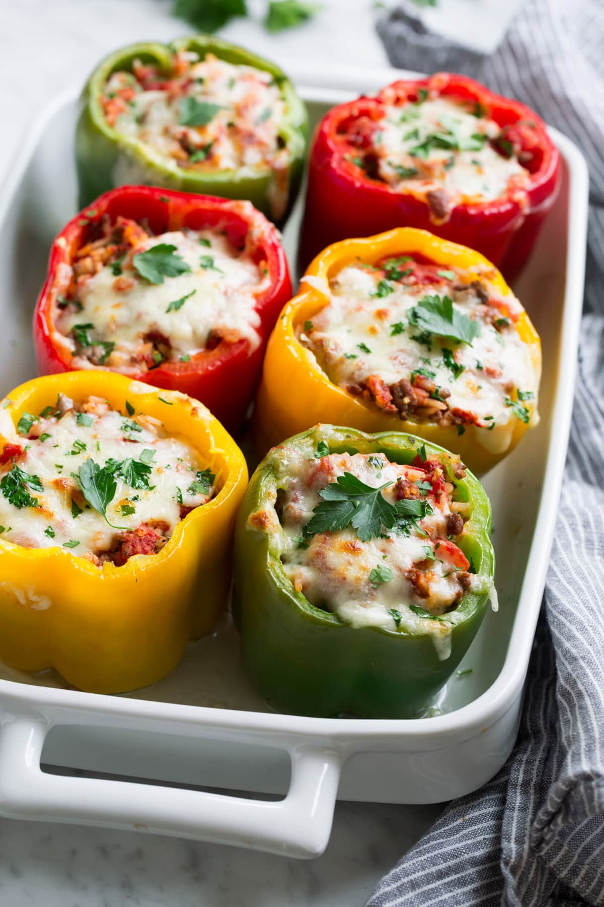

Stuffed Peppers Recipe
The Stuffed Pepper
The stuffed pepper is commonly found in many cultures around the world. The premise is simple, remove the core and seeds of the pepper, and replace with desired stuffing!
Using sweet bell peppers, we add the filling of ground beef, rice, onion, garlic, diced tomatoes, and cheese. All topped with fresh parsley.
Ingredients
- Long grain white rice
- Bell peppers
- Olive oil
- Ground beef
- Yellow onion
- Garlic
- Canned petite diced tomatoes
- Tomato sauce
- Italian seasoning
- Fresh parsley
- Mozzarella cheese
Steps
Preparing the Filling
- Preheat oven to 400 degrees. Cook rice according to package instructions.
- Meanwhile, trim about 1/4-inch from tops of bell peppers and then remove stems, ribs and seeds. Fill a baking dish just large enough to fit peppers with about 1/2-inch of water.
- Place peppers upside down in water, cover tightly with foil and bake 20 minutes.
- Meanwhile heat olive oil in a large non-stick skillet over-medium high heat.
- Add onion and saute 3 minutes. Move onions to one far side of the skillet.
- Add beef in chunks, season with salt and pepper then let sear until browned on bottom, about 2 to 3 minutes.
- Break up beef and toss with onions and continue to cook 2 minutes, add garlic and cook until beef is cooked through about 1 minute longer.
- Remove from heat, drain off excess fat (I like to tilt skillet to one side and dab up excess fat using tongs and paper towels).
The Peppers
- Reduce oven temperature to 350. Turn par-baked peppers upright and fill with beef filling.
- Pour remaining tomato sauce over peppers. Cover with foil and continue to bake 20 minutes.
- Remove from oven, sprinkle with cheese, return to oven and bake until peppers have reached desired tenderness, about 10 to 20 minutes (thinner peppers will be done near lesser time thicker near greater). Sprinkle with parsley and serve warm.